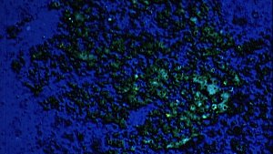

WORM Filmwerkplaats
Rotterdam
Website
WORM Filmwerkplaats Rotterdam
About WORM Filmwerkplaats Rotterdam
Artist-run film lab WORM Filmwerkplaats, Rotterdam, was founded in
2000 by Esther Urlus and Joost van Veen.
Filmwerkplaats functions as a workspace dedicated to DIY analogue
practice, geared towards artists interested in film as an
expressive, physical medium. Part of a larger network of artist-run
labs in Europe, Filmwerkplaats functions as a centre for new
experiments and debates around filmic creation. It has a unique
position in the Netherlands and far beyond.
For Labor of Love filmmaker/programmer Tim Leyendekker selected
sixteen short films that were mostly all produced, developed and
printed at the Filmwerkplaats premises in Rotterdam.
mondy 9 okt 8.30 p.m. werkstattkino
The program
Daan de Bakker
Utrecht 03
NL 2008 – 6 min – 16mm
Images shot in a suburb of Utrecht. The city reduced to a play of light and movement. Third film in a series of city portraits. Shot on a Bolex h16, all edits and effects were done in-camera.
Francien van Everdingen
Monologue extérieur
NL 2008 – 6 min – 16mm
A moving painting. The walls of an interior start to whisper. The silence of the inside, a room without inhabitants, is filled with the liveliness of the outer world. In miniature, the universe slowly turns outwards.
Christelle Gualdi
Color writing me out
NL 2006 – 6 min – 16mm
A film about joining somebody on a personal trip and leaving open the direction of this journey. Its
outcome is different every time.
{kind=link}
Tim Leyendekker
still
NL 2005 – 5 min – 16mm
www.absentwithoutleave.org
1989: Two kids make their first date through a telephone dating line. We see the bench and the park as silent witnesses to their encounter. A short film about desire and memory, made during a workshop with Norwegian filmmaker Inger Lise Hansen
Judith van der Made
S.N.O.W.
NL 2016 – 3 min – 16mm
Snow/forest/sun/crisp cold air/...a mesmerizing, almost surreal moment. Caught onto sty 16mm sound-filmstock with a lens-less 16mm handcrank pinhole camera. Soundtrack by Ji Youn Kang
Rebecca Erin Moran
Still life with fries
NL 2015 – 1 min – 16mm
www.rebeccaerinmoran.com
Projected painting, shown here as a one-minute loop.
John Price
Untitled (portrait project)
NL 2008 – 1 min – 16mm
Canadian filmmaker John Price visited Rotterdam for the film festival and was given a camera and filmstock by Filmwerkplaats. He made this self portrait in a hotel room. The film has only been screened once before, during that same festival in 2008.
Ferenc Sebők
Gebouwen
NL 2003 – 2 min – 16mm
Animated portrait of the state monument where the Filmwerkplaats was situated before it merged with WORM. Made during a workshop with Tony Hill.
Carolien Slegers
Groeten uit
NL 2003 – 2 min – 16mm
Realised during a workshop conducted by British filmmaker Gregg Pope, Slegers’ Bolex explores Filmwerkplaats’ physical surroundings, the Justus van Effen block.
Lichun Tseng
Balga
NL 2012 – 5 min – 16mm
lichuntseng.com
Inspired by the eponymous Australian grass tree and the way its existence connects the land, the flora and the people. High contrast black and white film was used to capture and document the movement of the tree, as a way to reflect their visual poetry.
NL 2017 – 20 min – 35mm
lichuntseng.com
“I make landscapes out of what I feel. I make a holiday of sensation”, writes Fernando Pessoa in “The Book of Disquiet“. Filmmaker Lichun Tseng embraced this idea for this work, in which she captured many moments on 35 mm film, turning them into a layered experience in which time and place coalesce. Restlessness becomes concentration.
Esther Urlus
Idyll
NL 2008 – 6 min – 16mm
estherurlus.hotglue.me
An attack of imagined nostalgia for childhood. The applied do-it-yourself bas-relief print technique ensures a coloured image.
Deletion
NL 2017 – 12 min – 35mm
estherurlus.hotglue.me 
Suggestion allows negative space to be discerned – a hint of absent image – in an immersive cloud of coloured granules. Its substantiation lies in the viewer’s imagination, coloured by the dark ambient soundtrack. Shot on 16mm using home-made emulsion inspired by the more than a century-old autochrome colour process.
Joost van Veen
Interlude
NL 2005 – 3 min – 16mm
Inspired by the track “Interlude“ by the British band Manyfingers, a Chris Cole project. The film shows a group of Down Watchers (fish) swimming through chemical layers of high contrast black and white film stock. Recipient of the first IFFR Tiger Award in 2005.
Joost van Veen & Matt Hulse
Harrachov
NL 2006 – 10 min – 35mm
Combining live action, stop-frame animation and chemical processing techniques, the film explores the working of an arcane power which, like a black hole or immensely powerful electromagnet, exerts
a far-reaching and irresistible force upon certain objects and materials.
Pim Zwier
Roosje's Atleet 35133
NL 2005 – 6 min – 16mm
Personal representation of the registration of cows. A combination of archive footage of Frisian bovine champions and dramatised childhood memories, made on orthochromatic film, which accentuates its black and white qualities.